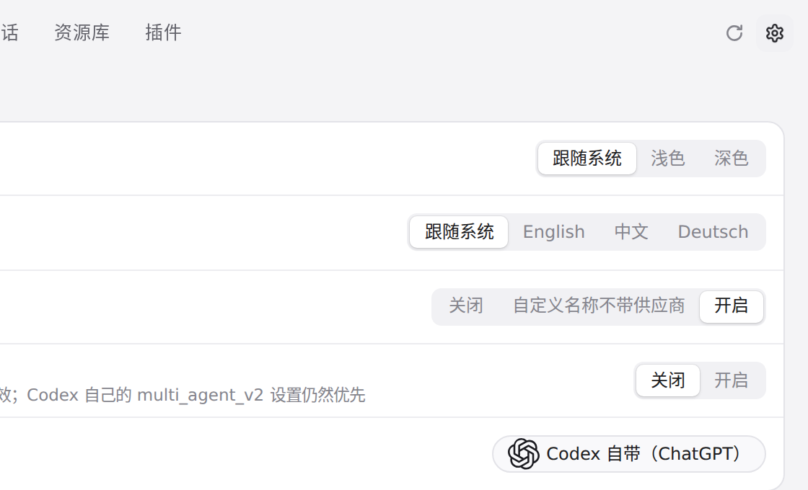
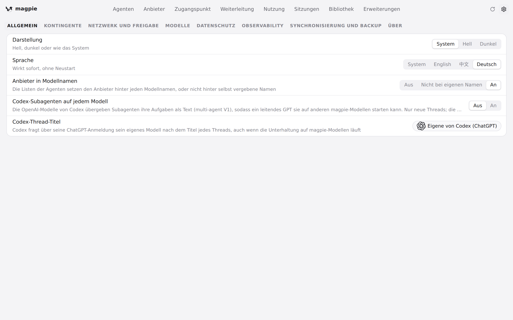
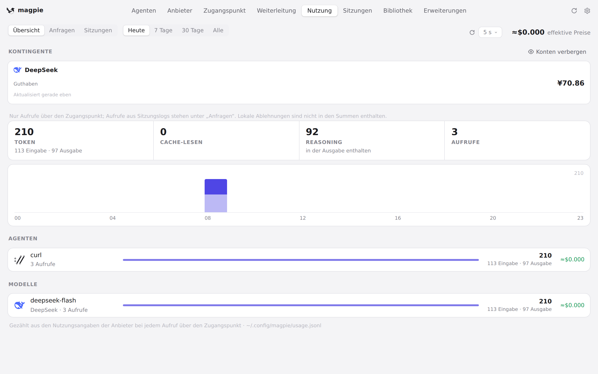
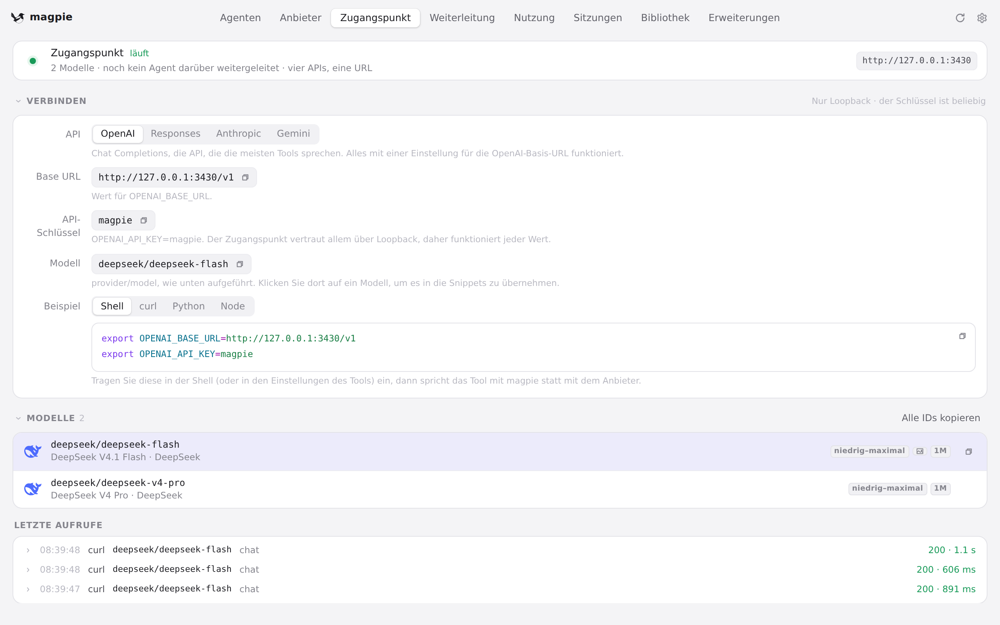

#770 界面预览
commit cd8494d · 回到 PR · 设置 → 语言的选项里新增「Deutsch」，并补上完整的德语词条；切到德语后导航、文案以及日期/数字（改走新的 localeTag()）都随语言变化。其余改动（HOME/XDG 等环境变量与 APPIMAGE 的路径防护、测试与脚本加固）只在启动和脚本层面，没有界面表现。
红线是鼠标走过的轨迹，红色圆环是一次点击；底部文字是这一步在做什么。空格暂停，← → 逐段查看。

语言设置里的 Deutsch · 设置 → 常规：「语言」一行

语言设置里的 Deutsch · 点击「Deutsch」后的设置页

德语界面下的用量与网关 · 「用量」页：额度、数字与时间

德语界面下的用量与网关 · 「网关」页的界面文案